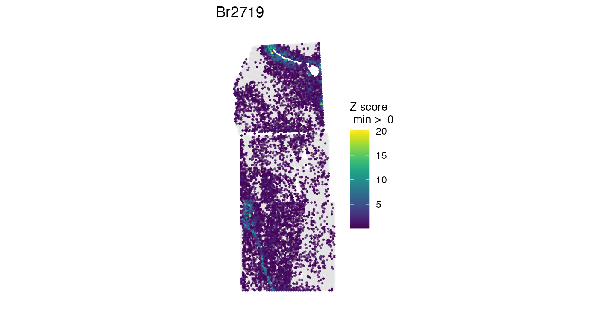
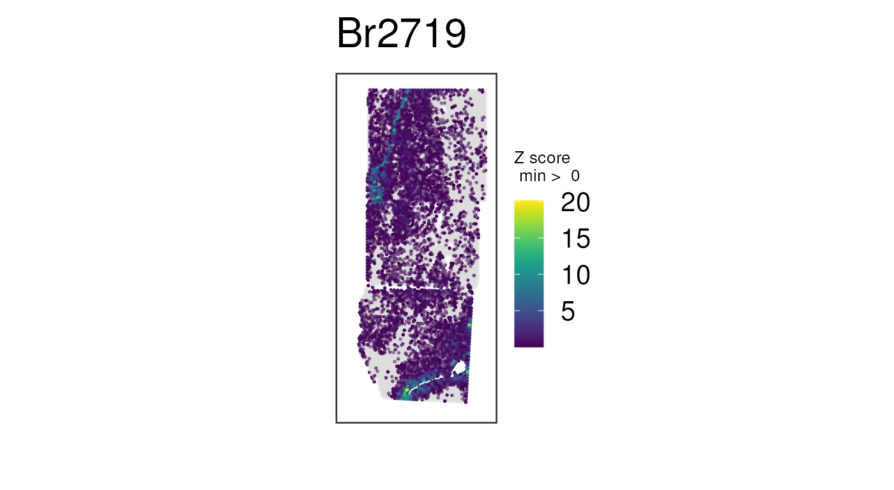
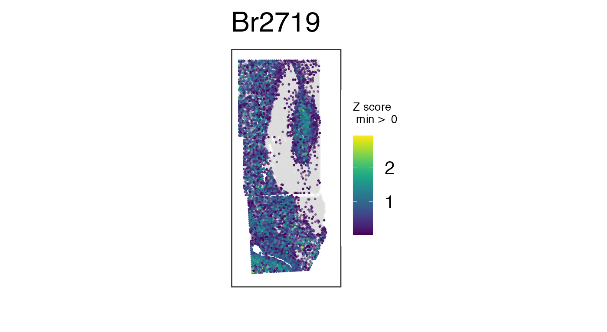
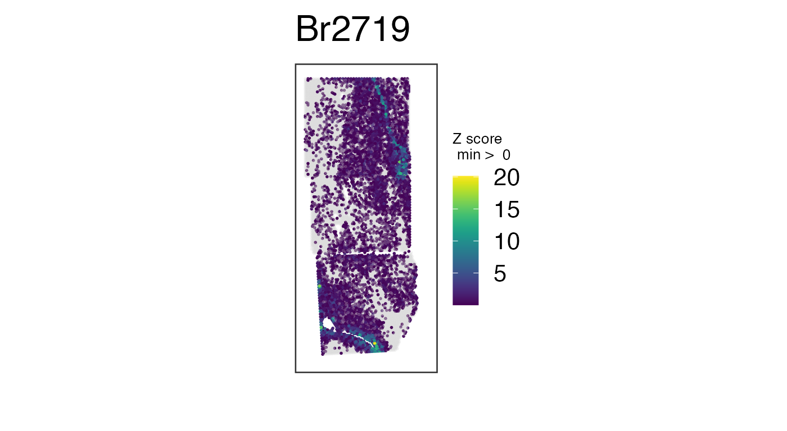

vignettes/misc.Rmd
misc.RmdThis vignette has some extra companion notes to the Introduction
to visiumStiched main vignette.
Let’s load the spatialLIBD package we’ll use in this
vignette.
Now we can download the example visiumStitched_brain
data that includes normalized logcounts. We’ll define the
same example white matter marker genes.
## Grab SpatialExperiment with normalized counts
spe <- fetch_data(type = "visiumStitched_brain_spe")
#> 2024-08-20 20:44:28.401844 loading file /github/home/.cache/R/BiocFileCache/384f9f3410_visiumStitched_brain_spe.rds%3Frlkey%3Dnq6a82u23xuu9hohr86oodwdi%26dl%3D1
## Check that spe does contain the "logcounts" assay
assayNames(spe)
#> [1] "counts" "logcounts"
## Define white matter marker genes
wm_genes <- rownames(spe)[
match(c("MBP", "GFAP", "PLP1", "AQP4"), rowData(spe)$gene_name)
]As a SpatialExperiment, the stitched data you
constructed with visiumStitched::build_spe() may need to be
rotated or mirrored by group. This can be done using the
SpatialExperiment::rotateObject() or
SpatialExperiment::mirrorObject() functions. These
functions are useful in case the image needs to be transformed to reach
the preferred tissue orientation.
## Rotate image and gene-expression data by 180 degrees, plotting a combination
## of white-matter genes
vis_gene(
rotateObject(spe, sample_id = "Br2719", degrees = 180),
geneid = wm_genes,
assayname = "counts",
is_stitched = TRUE,
spatial = FALSE
)
## Mirror image and gene-expression data across a vertical axis, plotting a
## combination of white-matter genes
vis_gene(
mirrorObject(spe, sample_id = "Br2719", axis = "v"),
geneid = wm_genes,
assayname = "counts",
is_stitched = TRUE,
spatial = FALSE
)
You might want to re-make these plots with
spatial = TRUE so you can see how the histology image gets
rotated and/or mirrored. For file size purposes of this vignette, here
we had to use spatial = FALSE.
As noted in
the main vignette, library-size variation across spots can bias the
apparent spatial distribution of genes when raw counts are used. The
effect is often dramatic enough that spatial trends cannot be easily
seen across the stitched data until data is log-normalized. Instead of
performing normalization here, we’ll fetch the object with normalized
counts from spatialLIBD, then plot a few white matter genes
as before:
## Plot combination of normalized counts for some white-matter genes
vis_gene(
spe,
geneid = wm_genes,
assayname = "logcounts",
is_stitched = TRUE,
spatial = FALSE
)
Recall the unnormalized version of this plot, which is not nearly as clean:
## Plot raw counts, which are noisier
## Same plot we made before, but this time with no histology images
vis_gene(
spe,
geneid = wm_genes,
assayname = "counts",
is_stitched = TRUE,
spatial = FALSE
)
The actual normalization code for this example data is available here.